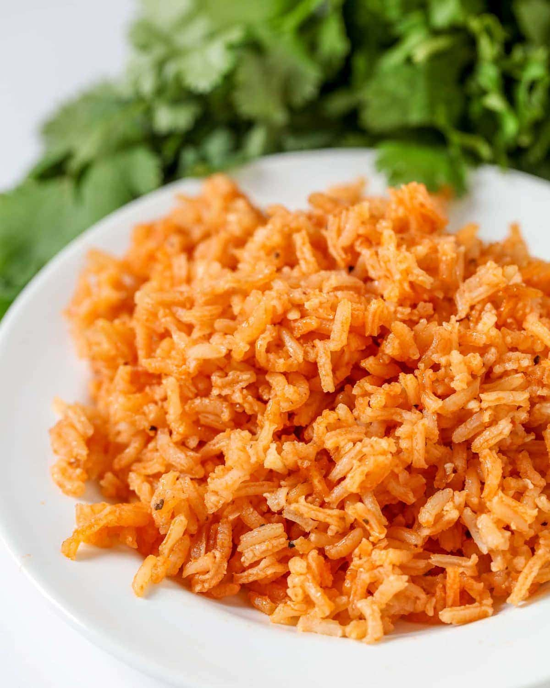

Rice

Ingredients
- 2 cups long grain rice
- 1/8 cup oil
- 8oz tomato sauce
- 1 tsp minced garlic
- 4 cups of water
- 1 cube chicken flavored bouillon
- cumin
- garlic pepper
- cilantro
Instructions
- Heat oil in large frying pan on medium heat.
- Add rice and cook until golden brown.
- Add 1 chicken flavored bouillon cube to 4 cups water and microwave for 3 minutes.
- When rice is brown, add water, tomato sauce, salt, garlic, cumin and garlic pepper to pan.
- Stir and cover pan. Let simmer for 30-40 minutes or until all is cooked and there is no liquid left. Fluff before serving and ENJOY.
Source